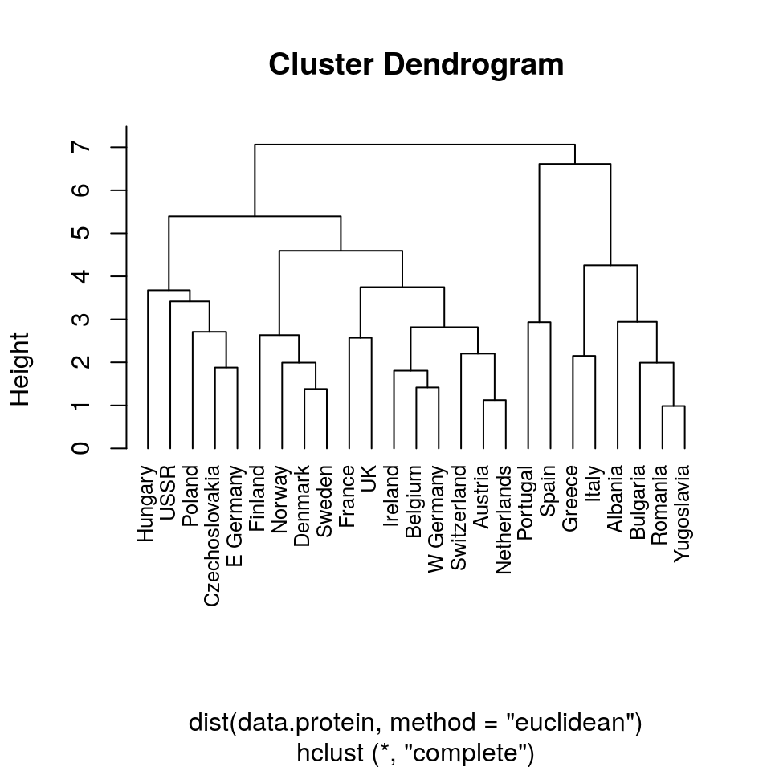
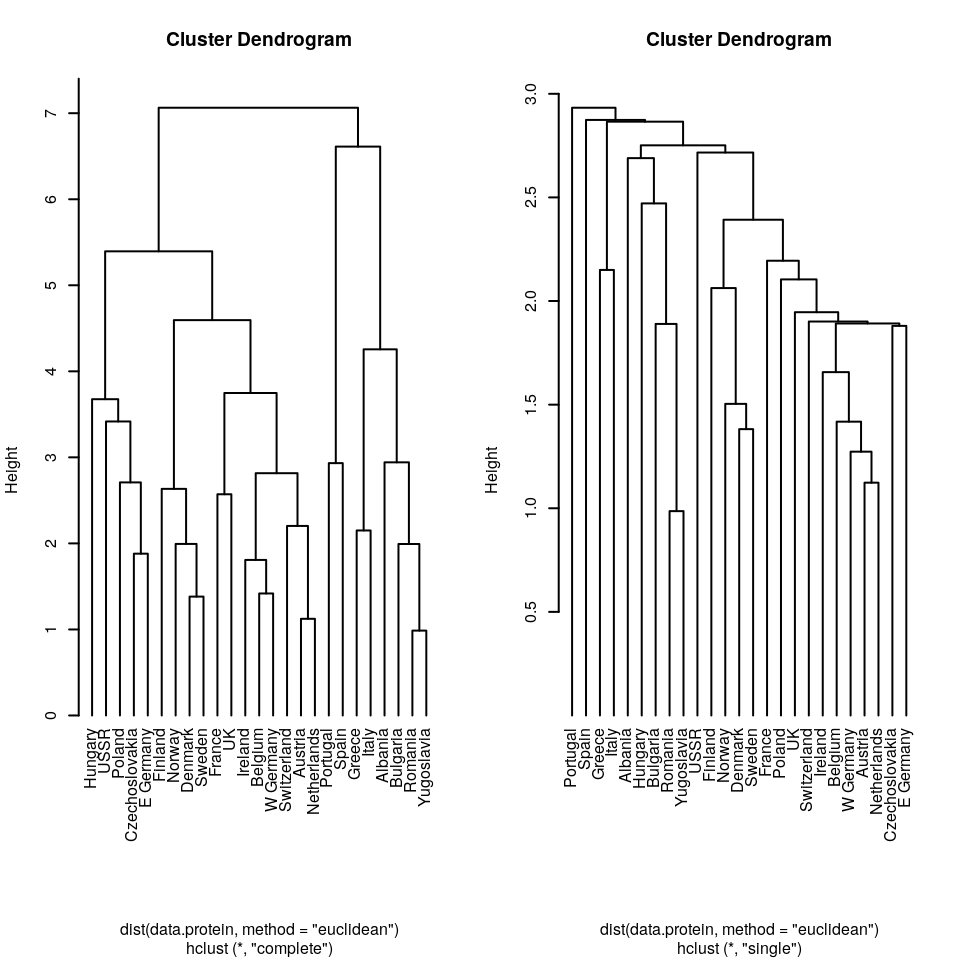
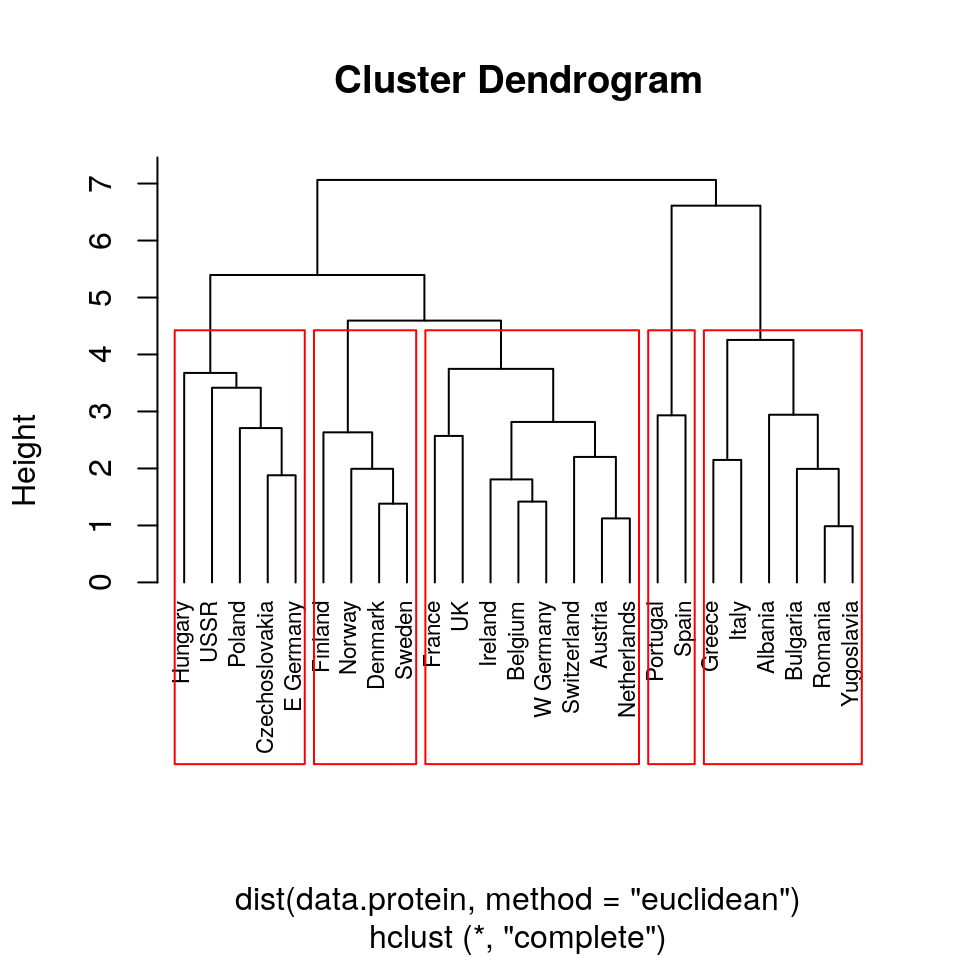
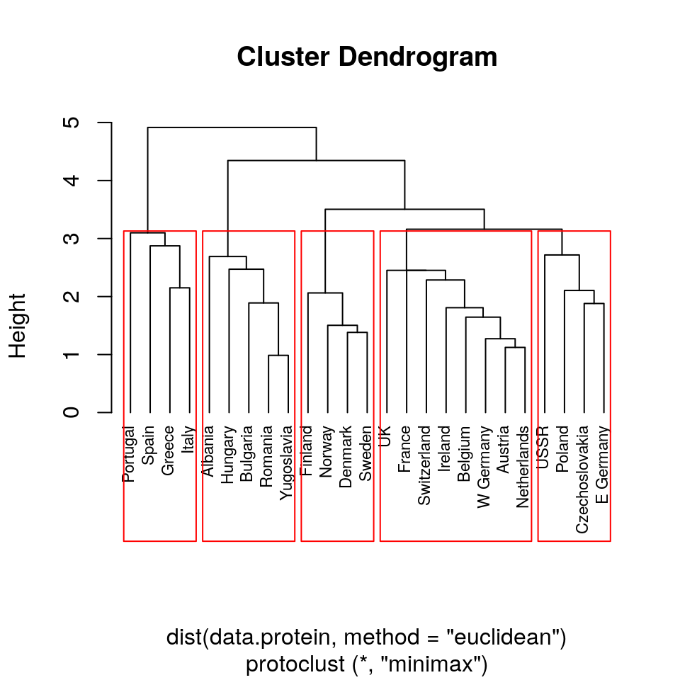
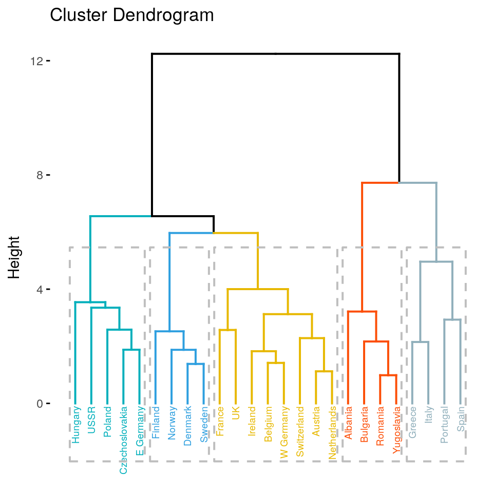

En esta sección utilizaremos los datos de A. Weber and Weber (1974) sobre consumo de proteínas en los países europeos en la década de los ’70 del pasado siglo.
Comenzamos por cargar los datos en R.
data.protein = read.csv("http://kiwi.uc3m.es/datos-curso-deloitte/protein.csv")En este caso, el archivo que queremos importar en R se encuentra en un recurso web, en lugar de la ruta local usual. Una vez importados los datos, podemos ver de qué se tratan.
knitr::kable(head(data.protein))| Country | RedMeat | WhiteMeat | Eggs | Milk | Fish | Cereals | Starch | Nuts | Fr.Veg |
|---|---|---|---|---|---|---|---|---|---|
| Albania | 10.1 | 1.4 | 0.5 | 8.9 | 0.2 | 42.3 | 0.6 | 5.5 | 1.7 |
| Austria | 8.9 | 14.0 | 4.3 | 19.9 | 2.1 | 28.0 | 3.6 | 1.3 | 4.3 |
| Belgium | 13.5 | 9.3 | 4.1 | 17.5 | 4.5 | 26.6 | 5.7 | 2.1 | 4.0 |
| Bulgaria | 7.8 | 6.0 | 1.6 | 8.3 | 1.2 | 56.7 | 1.1 | 3.7 | 4.2 |
| Czechoslovakia | 9.7 | 11.4 | 2.8 | 12.5 | 2.0 | 34.3 | 5.0 | 1.1 | 4.0 |
| Denmark | 10.6 | 10.8 | 3.7 | 25.0 | 9.9 | 21.9 | 4.8 | 0.7 | 2.4 |
dim(data.protein)## [1] 25 10Tenemos 25 países y 10 variables, aunque una de estas variables es Country, que contiene el identificador de cada fila. Debemos transformar este dataset para deshacernos de la columna Country sin perder la información de las filas. Esto lo hacemos con el comando rownames (que es de lectura y asignación).
rownames(data.protein)## [1] "1" "2" "3" "4" "5" "6" "7" "8" "9" "10" "11" "12" "13" "14"
## [15] "15" "16" "17" "18" "19" "20" "21" "22" "23" "24" "25"rownames(data.protein) = data.protein$CountrySi ahora vemos nuestro dataset, observamos que la información de la variable Country está repetida en los nombres de las filas.
knitr::kable(head(data.protein))| Country | RedMeat | WhiteMeat | Eggs | Milk | Fish | Cereals | Starch | Nuts | Fr.Veg | |
|---|---|---|---|---|---|---|---|---|---|---|
| Albania | Albania | 10.1 | 1.4 | 0.5 | 8.9 | 0.2 | 42.3 | 0.6 | 5.5 | 1.7 |
| Austria | Austria | 8.9 | 14.0 | 4.3 | 19.9 | 2.1 | 28.0 | 3.6 | 1.3 | 4.3 |
| Belgium | Belgium | 13.5 | 9.3 | 4.1 | 17.5 | 4.5 | 26.6 | 5.7 | 2.1 | 4.0 |
| Bulgaria | Bulgaria | 7.8 | 6.0 | 1.6 | 8.3 | 1.2 | 56.7 | 1.1 | 3.7 | 4.2 |
| Czechoslovakia | Czechoslovakia | 9.7 | 11.4 | 2.8 | 12.5 | 2.0 | 34.3 | 5.0 | 1.1 | 4.0 |
| Denmark | Denmark | 10.6 | 10.8 | 3.7 | 25.0 | 9.9 | 21.9 | 4.8 | 0.7 | 2.4 |
Por tanto, podemos eliminar esa columna
data.protein$Country = NULLComo podemos observar, aunque posiblemente las variables estén medidas en las mismas unidades, no se encuentran en el mismo rango de valores. Por ejemplo, Cereals toma valores altos comparada con el resto. Para evitar que la escala individual de las variables afecten el resultado final, escalamos previamente la matriz de datos.
data.protein = as.data.frame(scale(data.protein))
knitr::kable(head(data.protein))| RedMeat | WhiteMeat | Eggs | Milk | Fish | Cereals | Starch | Nuts | Fr.Veg | |
|---|---|---|---|---|---|---|---|---|---|
| Albania | 0.0812649 | -1.7584889 | -2.1796385 | -1.1557381 | -1.2002821 | 0.9159176 | -2.2495772 | 1.2227536 | -1.3504051 |
| Austria | -0.2772567 | 1.6523731 | 1.2204544 | 0.3923768 | -0.6418747 | -0.3870690 | -0.4136872 | -0.8923886 | 0.0909140 |
| Belgium | 1.0970762 | 0.3800675 | 1.0415022 | 0.0546062 | 0.0634821 | -0.5146342 | 0.8714358 | -0.4895043 | -0.0753921 |
| Bulgaria | -0.6059016 | -0.5132535 | -1.1954011 | -1.2401808 | -0.9063835 | 2.2280161 | -1.9435955 | 0.3162641 | 0.0354786 |
| Czechoslovakia | -0.0382423 | 0.9485445 | -0.1216875 | -0.6490824 | -0.6712645 | 0.1869740 | 0.4430614 | -0.9931096 | -0.0753921 |
| Denmark | 0.2306489 | 0.7861225 | 0.6835976 | 1.1101391 | 1.6505349 | -0.9428885 | 0.3206688 | -1.1945517 | -0.9623576 |
Para crear un cluster jerarquico aglomerativo utilizaremos la función hclust del paquete básico stats. La sintaxis de esta función es hclust(d, method), donde d es una matriz de distancias entre las observaciones y method ( función linkage) describe el criterio que usaremos para unir distintos clusters.
Para calcular la matriz de distancias d podemos usar la función dist, en este caso, dist(data.protein, method = "euclidean"), donde el parámetro method describe qué distancia estamos calculando. Esta no es la única función que podemos utilizar para calcular distancias. Por ejemplo, si nuestros datos son geográficos (longitud, latitud), usaríamos la función distm del paquete geosphere.
hc = hclust(dist(data.protein, method = "euclidean"), method = "complete"); hc##
## Call:
## hclust(d = dist(data.protein, method = "euclidean"), method = "complete")
##
## Cluster method : complete
## Distance : euclidean
## Number of objects: 25Podemos utilizar el método plot de nuestro cluster hc, con el parámetro hang=-1, que dibuja todas las etiquetas al mismo nivel.
plot(hc, hang = -1, cex=0.8)
Lo que R ha dibujado ha sido el dendograma de hc. Este gráfico se utiliza para describir la asignación de los clusters para cada valor de Height. Cuanto más cerca del cero se juntan las observaciones, en este caso los países, más similares son en cuanto a consumo de proteínas. Para cada valor específico de Height tenemos una asignación diferente de los clusters.
dist?Vamos a explorar el resultado de la función dist aplicada a nuestros datos.
d = dist(data.protein, method = "euclidean"); head(d) ## [1] 6.136051 5.948761 2.764537 5.141148 6.634162 6.392250Como vemos, d es una matriz simétrica, con ceros en la diagonal, que R almacena en forma de vector, y para ahorrar espacio solamente almacena el triángulo inferior de la matriz. Si hacemos d[1] obtenemos la distancia (euclídea) entre Austria y Albania.
d[1]## [1] 6.136051sum((data.protein["Austria",] - data.protein["Albania",])^2)^(1/2)## [1] 6.136051Como vemos, d[1] coincide con la distancia euclídea entre las observaciones (vectores) data.protein["Austria",] y data.protein["Albania",], calculada usando la fórmula. Existen además otras distancias que podemos calcular usando la función dist.
d = dist(data.protein, method = "maximum"); d[1]## [1] 3.410862max(abs(data.protein["Austria",] - data.protein["Albania",]))## [1] 3.410862dist(data.protein[c("Albania", "Austria"),], method = "manhattan")## Albania
## Austria 15.97134sum(abs(data.protein["Austria",] - data.protein["Albania",]))## [1] 15.97134method en la función hclust?Comparemos los dos dendogramas que se obtienen al variar el parámetro method de la función hclust.
par=par(mfrow=c(1,2), cex=0.5)
hc1 = hclust(dist(data.protein, method = "euclidean"), method = "complete")
hc2 = hclust(dist(data.protein, method = "euclidean"), method = "single")
plot(hc1, hang=-1)
plot(hc2, hang=-1)
par(par)Como observamos, hemos obtenido dendogramas muy diferentes al cambiar method="complete" por method = "single".
En general, una función linkage especifica una similitud ( no necesariamente una distancia en el sentido matemático ) entre dos conjuntos (clusters) de datos.
Entre las funciones linkage más usuales están las siguientes.
Single linkage
Complete linkage
Average linkage
cutree y rect.hclustIndependientemente de la distancia (o dis-similitud) que consideremos entre las observaciones, y el método linkage para agrupar, usualmente el objetivo que perseguimos al hacer clúster jerárquico es reportar posibles grupos latentes en las observaciones. Sin embargo, hasta ahora hemos visto cómo obtener un dendogram, pero no cómo decidir qué grupos considerar.
La función cutree del paquete básico stats realiza un corte horizontal del dendograma. Podemos proporcionar uno de los dos, un número fijo de grupos mediante el parámetro k, o una altura en la cual cortar con el parámetro h.
cutree(hc1, k=3)## Albania Austria Belgium Bulgaria Czechoslovakia
## 1 2 2 1 2
## Denmark E Germany Finland France Greece
## 2 2 2 2 1
## Hungary Ireland Italy Netherlands Norway
## 2 2 1 2 2
## Poland Portugal Romania Spain Sweden
## 2 3 1 3 2
## Switzerland UK USSR W Germany Yugoslavia
## 2 2 2 2 1La función cutree retorna un vector de tipo Named int de longitud es número de observaciones, con los índices de pertenencia a los grupos. Podemos utilizar esta información para trabajar con los diferentes grupos.
cut = cutree(hc1, k=5)
for (i in 1:5) {
write(paste0("Cluster ",i,":\n",
toString(names(which(cut==i))),
"\n-----------------\n"), "")}## Cluster 1:
## Albania, Bulgaria, Greece, Italy, Romania, Yugoslavia
## -----------------
##
## Cluster 2:
## Austria, Belgium, France, Ireland, Netherlands, Switzerland, UK, W Germany
## -----------------
##
## Cluster 3:
## Czechoslovakia, E Germany, Hungary, Poland, USSR
## -----------------
##
## Cluster 4:
## Denmark, Finland, Norway, Sweden
## -----------------
##
## Cluster 5:
## Portugal, Spain
## -----------------Otra función que puede ser muy útil para representar la agrupación obtenida es rect.hclust, también del paquete base stats.
plot(hc1, hang = -1, cex=0.7)
rect.hclust(hc1, k=5)
protoclustRecientemente, Bien and Tibshirani (2011) han introducido un nuevo tipo de linkage, el minimax linkage. Este tiene la propiedad de que para un corte a altura h, cualquier punto está a distancia menor que h del centro de su cluster.
Para utilizar el linkage minimax, debemos instalar el paquete protoclust
if(!require("protoclust"))install.packages("protoclust"); library(protoclust)## Loading required package: protoclustLa función protoclust retorna un objeto similar a la salida de hclust.
pc = protoclust(dist(data.protein, method = "euclidean"))
plot(pc, hang = -1, cex=0.7)
rect.hclust(pc, k=5)
factoextrafactoextra es un paquete para extraer y visualizar las salidas de distintos análisis exploratorios en R. Para instalarlo desde github, primero necesitamos instalar la librería devtools.
if(!require("devtools"))install.packages("devtools")
if(!require(factoextra))devtools::install_github("kassambara/factoextra")Las salidas producidas con este paquete son más atractivas que las usuales, producidas con el método plot correspondiente.
library("factoextra")
res <- hcut(data.protein, k = 5)
fviz_dend(res, rect = TRUE, cex = 0.5,
k_colors = c("#00AFBB","#2E9FDF", "#E7B800", "#FC4E07", "#90AFBB"))
Bien, Jacob, and Robert Tibshirani. 2011. “Hierarchical Clustering with Prototypes via Minimax Linkage.” Journal of the American Statistical Association 106 (495). Taylor & Francis: 1075–84.
Weber, Adolf, and Ernst Weber. 1974. “The Structure of World Protein Consumption and Future Nitrogen Requirements.” European Review of Agricultural Economics 2 (2). Oxford University Press: 169–92.